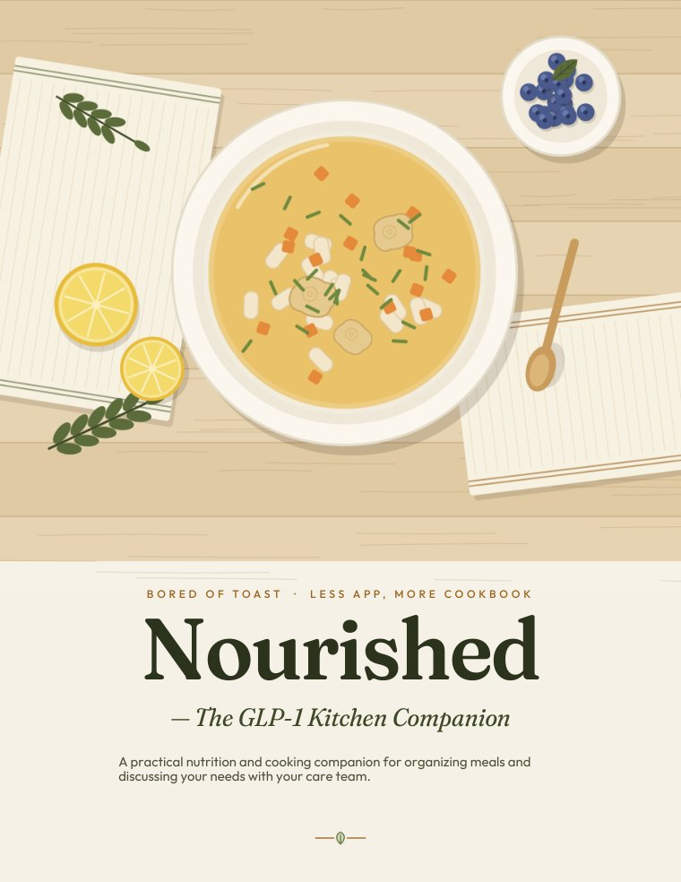
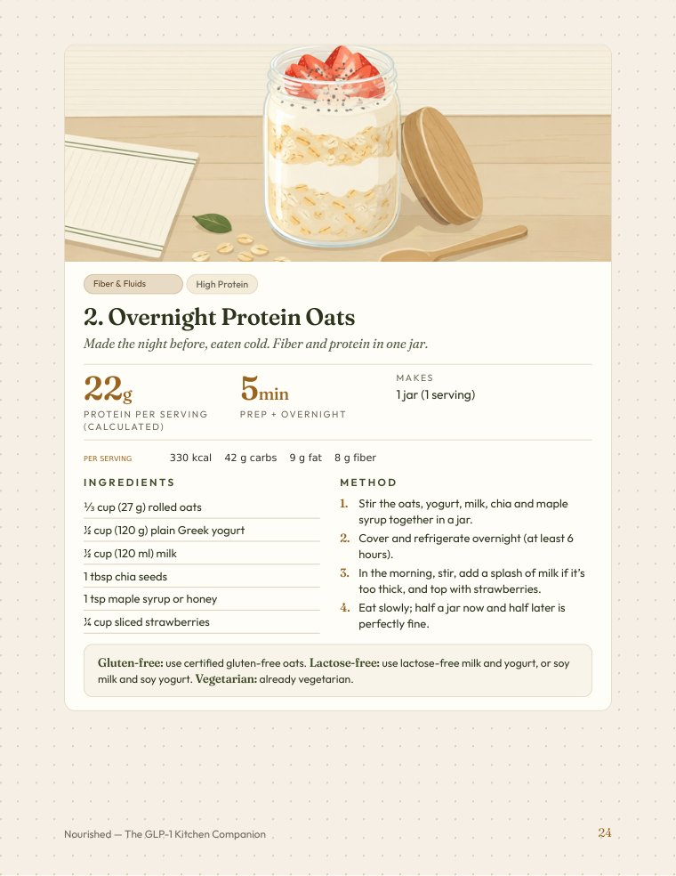
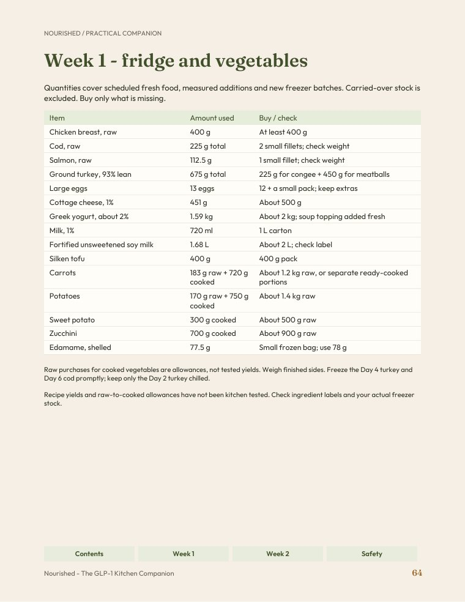
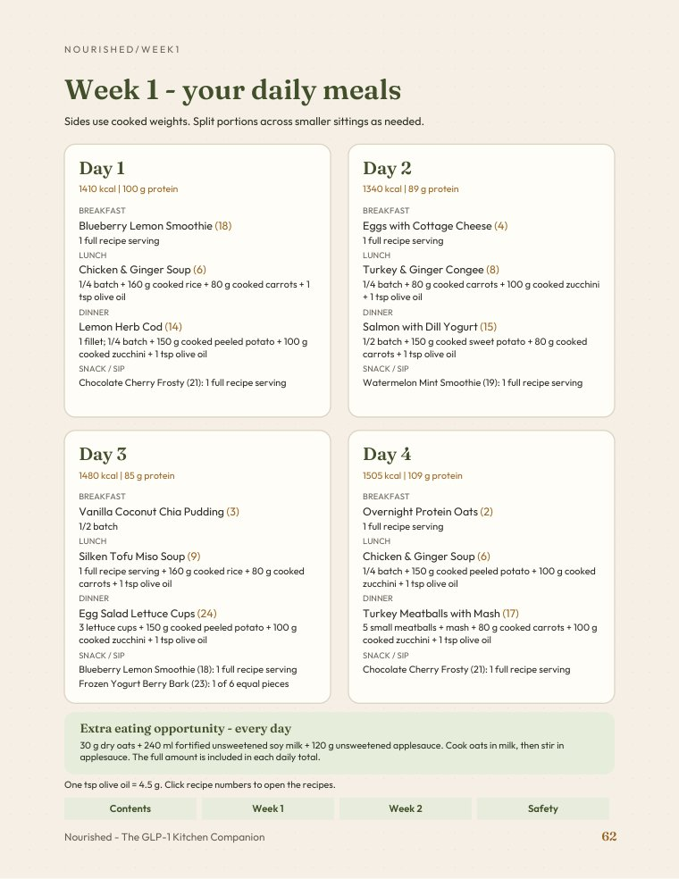
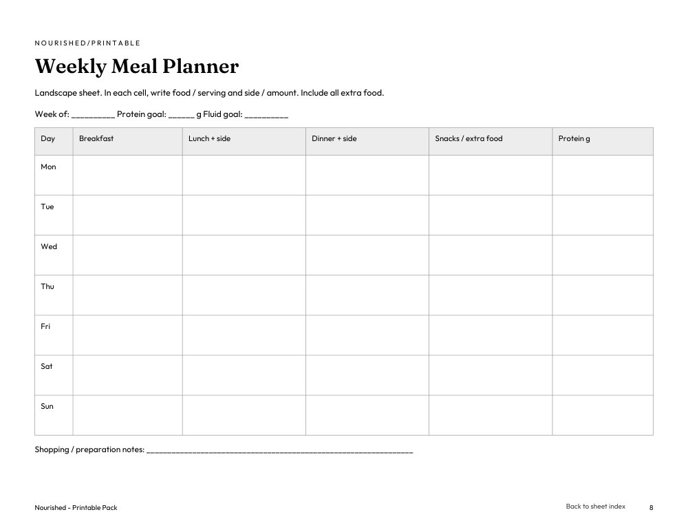

Find your next recipe
Breakfasts, mains, soups and snacks, with ingredients, methods and nutrition estimates.
Nourished / By Bored of Toast
A practical cooking collection for adults using GLP-1 medication. Find recipes, check your shopping and plan what to prepare.
36 recipes4 weeks of meal examplesRead digitally or print

4 PDFsBreakfasts, mains, soups and snacks, with ingredients, methods and nutrition estimates.
Follow recipe references from the meal examples to the shopping quantities and prep notes.
Use the printable sheets for your meals, shopping notes and freezer stock.
See what you will use
Open any preview for a closer look.

Ingredients, instructions and calculated nutrition estimates, with practical recipe notes.
View the page →
Recipe amounts and buying notes, so you can check your stock before heading to the store.
View the page →
Meal examples connected to recipe numbers, shopping and preparation pages.
View the page →One collection / Four useful parts
The main guide / 89 pages
Begin with 24 recipes and Weeks 1–2, then use the shopping, prep and everyday cooking guidance.
The main guide is your starting point. The bonuses extend it with more examples, recipes and planning sheets.
Continue into Weeks 3–4 with more meal examples, shopping checklists and prep plans.
26 pagesAdd 12 more recipes to your options, with portions, side suggestions and substitutions.
18 pagesWrite your own plans: 11 sheets for meals, shopping, freezer stock and personal records, plus an index.
12 pages
On your screen. On your kitchen counter.
Keep the collection on your device, then print a recipe, shopping list or planning sheet when you need it. The Printable Pack includes 11 sheets made for handwriting.
Try the Weekly Meal Planner now: one free sheet from the full collection, ready for your own meals, portions and additions.
1-page PDF · A4 or US Letter · Landscape · Fit to printable area. Open the PDF and use your reader’s Print option. Black-and-white is suitable for this sheet.
Start with your next week
Start small or explore the collection
| Inside | Free kit | Nourished |
|---|---|---|
| Recipes | 3 samples | 36 recipes |
| Planning | Example + organizer | 4 weeks of meal examples |
| Shopping | One sample checklist | Weekly lists + prep notes |
| Files | 1 PDF | 4 PDFs |
| Price | Free | US$20 |
Before you choose
Adults using GLP-1 medication who want practical cooking ideas and tools to organize meals. It does not replace individual care or a personalized nutrition plan.
Four English PDFs: the main guide and three companions. Together they contain 36 recipes, four weeks of meal examples, shopping and preparation pages, and printable planning tools.
Weeks 1-2 are in the main guide. Weeks 3-4 are in the Meal Plan Companion. Recipe numbers continue across the main guide and Recipe Pack Volume 2.
Yes, in a PDF reader. Fixed page layouts need zoom for comfortable reading of recipes and tables. Some mobile readers do not open links between PDFs; recipe and page references also let you navigate manually.
Yes. Print only the pages you need. Choose A4 or US Letter, Fit to printable area and black-and-white for the planning sheets. The Weekly Meal Planner uses landscape; the other sheets use portrait. You can also write on them in a PDF annotation app. They are static sheets, not interactive form fields.
The planned offer is US$20 for the four-PDF collection, as a one-time purchase. Checkout and delivery details will be available when purchasing opens.
Yes. Explore the free GLP-1 Kitchen Starter Kit, with three recipe samples, a shopping checklist and a planning organizer.
Nourished - The GLP-1 Kitchen Companion
The main guide and all three bonuses. Four English PDFs, ready to save or print.
Checkout is not open yet. Preview the free starter kit while we prepare the launch.
Preview the free starter kitGeneral cooking and planning education, not medical advice or a personalized diet. Nutrition values are estimates; brands, substitutions and portions change them. Discuss your individual needs with your care team.